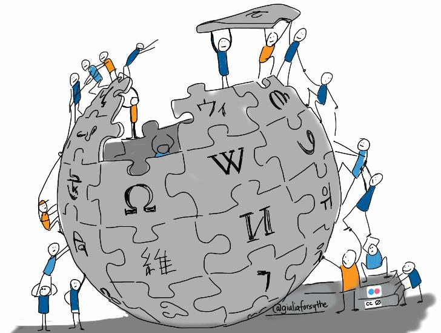

Wikipédia, une encyclopédie illégitime ?
| Wikipedia | |
|  | |
|
|
|
| Hébergeur | Wikimédia Foundation |
|---|---|
| Développeur | Tout le monde |
|
|
|
| Date de sortie | 15 janvier 2001 (version anglaise) |
| Type de site | Encyclopédie participative |
| Langues | 291 |
Wikipedia, encyclopédie en ligne très populaire, permet un accès simple et rapide à des connaissances presque infinies sur n'importe quel sujet. Cependant, le principe même du site, à savoir la contribution possible de tout un chacun, potentiellement de manière anonyme, incite de nombreuses personnes à remettre en cause la fiabilité ou la neutralité du contenu disponible sur Wikipedia.
Ce site présente le résultat de l'étude de ces contreverses : comment Wikipedia est-elle remise en cause ? Comment son fonctionnement répond à ces questionnements? Qui sont les acteurs de ces débats? Quelles sont les aspects juridiques ? Il s'agit d'un travail neutre, l'objectif n'est pas de décider qui a tort ou raison, mais de présenter toutes les facettes du débats, pour mieux comprendre wikipedia et l'usage que nous en faisons.
Cette première page donne une vue générale de la controverse, et du fonctionnement de Wikipedia.
Sommaire
Problématiques
Plusieurs problématiques apparaisent :
- L'information sur Wikipedia est-elle fiable ?
- La neutralité de point de vue est-elle respectée sur Wikipedia ?
- L'information doit-elle uniquement provenir d'experts ?
- Comment lutter contre le vandalisme sur Wikipedia (action d'induire intentionnellement des erreurs sur une page Wikipedia) ?
Wikipedia remise en question
Fiabilité de l'information
{kind=link}
Un des points récurrents du débat est la facilité, pour n'importe quelle personne, de modifier les informations présentes sur Wikipedia. La fiabilité des informations est donc remise en cause puisqu'elles ne proviennent pas d'expert. Les exemples d'erreurs les plus connues sont des biographies inexactes, restée suffisamment longtemps en ligne avant d'être modifiée pour créer des mini-événements. Cela a choqué et entraîné la critique de personnalités comme Pierre Assouline (journaliste et professeur à Sciences Politique) qui affirmait que le dernier à modifier une page a ''raison''. Cependant, d'après une étude publiée dans la revue Nature, le nombre d'erreurs moyen par articles Wikipedia est sensiblement le même que celui de la Britannica Encyclopédia, encyclopédie faisant appel à des experts pour rédiger chaque article (2,9 erreurs par articles de Britannica, 3,8 pour Wikipedia)[1].
Comment Wikipedia s'assure t-elle de la fiabilité des informations ?
Pour garantir une certaine fiabilité, Wikipedia dispose de plusieurs outils, voici les principaux :
- Tout d'abord des administrateurs, arbitres, et bureaucrate, chargé d'appliquer les supressions, sanctions... validées par la communauté. Leur rôle n'est pas éditorial, seulement administratif, leur avis concernat le contenu d'un article ne compte pas plus qu'un autre.
- Les contributeurs et lecteurs eux-même sont invités à participer aux corrections.
- Un système de commentaire colorés "Référence nécessaire", "Manque de clarté"... accessible a tous le monde, pour souligner les problèmes d'un article sans avoir à le modifier soi-même.
- Une page de discussion où les contributeurs peuvent argumenter en faveur ou contre une modification (tout est archivé et consultable via l'onglet discussion en haut à droite de chaque article).
- Un historique de l'article (en haut à droite de chaque article).
Pour mettre en valeur les articles pointus et fiable, Wikipedia dispose d'un label article de qualité, très difficile à obtenir. Les bons articles (terme officiel) sont variés, comme par exemple la page du jeu Age of Empire 2. Les articles nouvellement labélisés sont mis en valeur sur la page d'accueil de Wikipedia.
Neutralité
{kind=link}
Certains groupes de pression (entreprises, lobbies...) chargent des personnes de modifier continuement Wikipedia pour donner une image positive à ces groupes. Cela peut ainsi altérer l'objectivité voulue par Wikipedia sur chacune de ses pages, Pierre Assouline relevant par exemple qu'à une époque, la première source (référencée en bas de page sur Wikipedia) de l'article sur l'affaire Dreyfus, était un ouvrage clairement anti-dreyfusard.
Comment Wikipedia garantit-elle sa neutralité ?
Wikipedia dispose de principes et de règles que s'efforce de suivre la plupart des contributeurs. Il est inscrit dans les règles que Wikipedia n'a pas pour but de faciliter la notoriété d'une personne ou d'un sujet. L'un des cinq principes fondateurs est la recherche de neutralité. Wikipedia affiche donc clairement sa volonté de rester impartiale dans son contenu.
Pour assurer la neutralité de point de vue, la Wikimedia Foundation a instaurée des protections sur les pages les plus sensibles. De plus tous les outils mentionnés plus haut aident à assurer la neutralité des pages. Les commentaires "reférence nécessaire" forcent les contributeurs à justifier leur propos, et les article ne citant pas suffisament de sources sont signalé via un en-tête "Cet article ne cite pas suffisamment ses sources", ce qui limite les articles partiaux.
Vandalisme
{kind=link}
Le vandalisme est courant sur wikipedia, et celle-ci cherche à tous prix à s'en protéger. Les dégradations vont du simple "Tag" (insulte, blagues...) à l'étude de la propagation d'erreurs dans l'encyclopédie. Voici quelques exemples d'expériences menées sur le vandalisme (il est à noté que même dans le cadre d'une étude il est interdit par la Wikimedia Foundation de vandaliser Wikipedia) :
- Sous la surveillance de P. Assouline, des étudiants de Science Politique ont volontairement modifié (vandalisé) certaines pages Wikipedia pour montrer qu'il était facile de corrompre l'information.[2]
- Dans la même idée, un professeur de français au lycée (Loys Bonod) a également modifié volontairement une page Wikipedia afin d'induire ses élèves en erreur, mais au contraire de P. Assouline, il est favorable à Wikipedia: il voulait démontrer qu'il ne faut pas simplement prendre l'information brute sur Wikipedia (et plus généralement sur le Web), mais exercer son esprit critique, et comparer différentes sources d'informations.[3]
Comment Wikipedia lutte t-elle contre le vandalisme ?
La Wikimedia Foundation (hébergeur de l'encyclopédie Wikipedia) fait tout son possible pour lutter contre le vandalisme, en enregistrant l'adresse IP des contributeurs anonymes (même si cette adresse est dynamique), pour pouvoir interdire l'accès en écriture aux personnes ayant commis de actes de dégradation. Les étudiants de Science politique mentionnés plus haut se sont ainsi vu interdire d'écrire durant 1 mois.
Comment utiliser ce site ?
Ce site présente l'information de trois manières pour mettre en exergue les différents aspects de la controverse :
- Les débats qui la constituent et leurs liens : arbre des débats
- L'ensemble des acteurs prenant part aux discussions, et leur opinions : carte des acteurs
- L'évolution temporelle de la controverse et des idées : frise chronologique
Notes et références
- Etude sur le nombre d'erreurs en moyenne dans un article Wikipedia : http://www.nature.com/nature/journal/v438/n7070/full/438900a.html
- Article sur l'étude réalisée par des étudiants de Science Politique : http://sur-wikipedia.over-blog.com/pages/La_Revolution_Wikipedia_la_preface_de_Pierre_Assouline-6899893.html
- Article d'un enseignant ayant piégé ses élèves en mettant de fausses informations sur le web : http://rue89.nouvelobs.com/2012/03/22/jai-piege-le-net-pour-donner-une-lecon-mes-eleves-230452